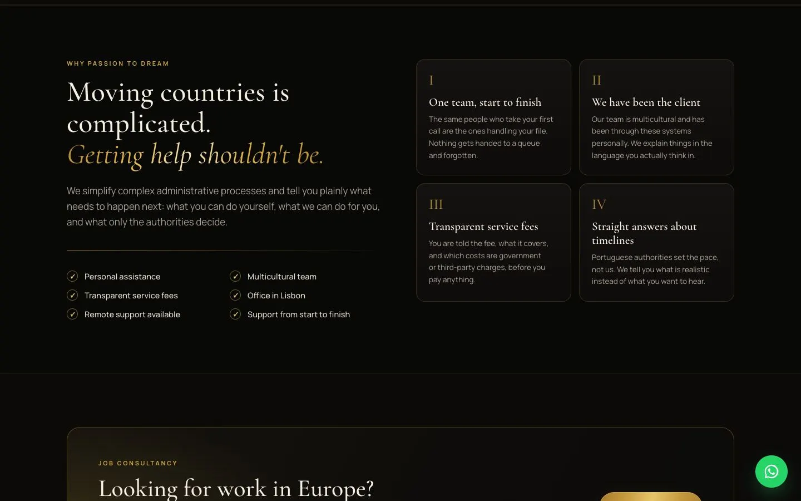

Passion to Dream
Lisbon consultancy for visas, residency and work placement.
A consultancy based in Lisbon that guides people through NIF, residence renewal, family reunification and work placement in Europe. The site is built for expats and job seekers who want one team to handle the paperwork.
Visit passiontodream.com
Design decisions
- A black and gold look: near-black background (#0B0A09), warm cream text (#F1EBDD) and gold gradient buttons with a soft glow.
- Headlines are set in Cormorant Garamond with the second line, "Meet Careers", in gold italic, while Manrope handles body text and the small spaced-out gold eyebrow labels.
- A gold infinity-and-feather logo with small birds is reused as the large hero illustration, so the brand mark carries the page.
- A four-item strip under the hero (Office, Remote support, Languages, Fees) states the practical facts in small caps labels and serif values.
- The Jobs nav item opens a dropdown listing Poland and Malta with one-line descriptions; a green WhatsApp button stays fixed in the corner.
- The page is dark in both colour schemes, so no separate dark capture was kept.
On a phone

Passion to Dream has a single theme, so there is one set of captures.
The flow, step by step


Further down the page
